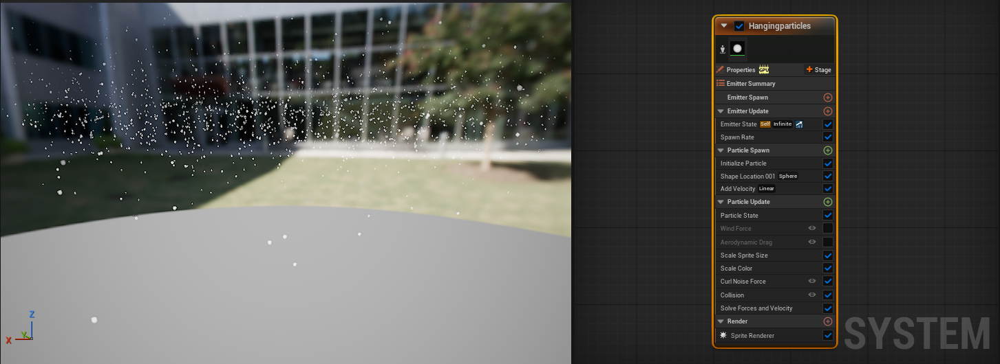

Unreal Engine Niagara VFX Practice
Development of interactive visual effects using Unreal Engine Niagara.
Fire
Show details
Niagara system developed to simulate a small fire source with rising smoke. The effect combines particle emission, intensity variations, and dissipation to achieve a believable result.
Floating Bubbles
Show details

Niagara system developed to generate soap bubbles with variable behavior. The material applied to the particles adjusts hue and transparency in response to the parameters controlled within the system.
Demonstration of the material used in the previous effect, configured to modify color and transparency based on variable values.
Rain
Show details
Simulation of a dark cloud forming and generating rainfall. The sequence combines the creation of the cloud with the emission of particles that reproduce falling raindrops, resulting in a believable atmospheric transition.
Snow
Show details

Snowfall simulation composed of spherical particles configured to reproduce flakes descending with irregular motion. The particle behavior was set to achieve a believable result without the presence of an initial cloud.